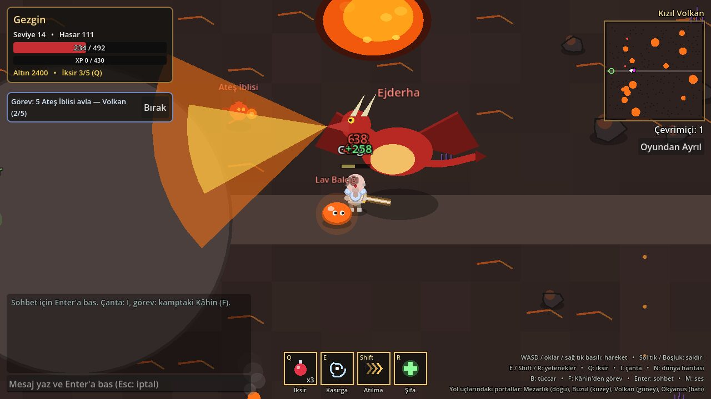
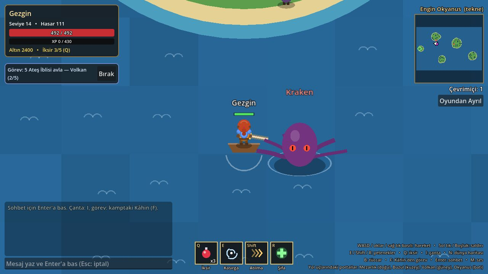
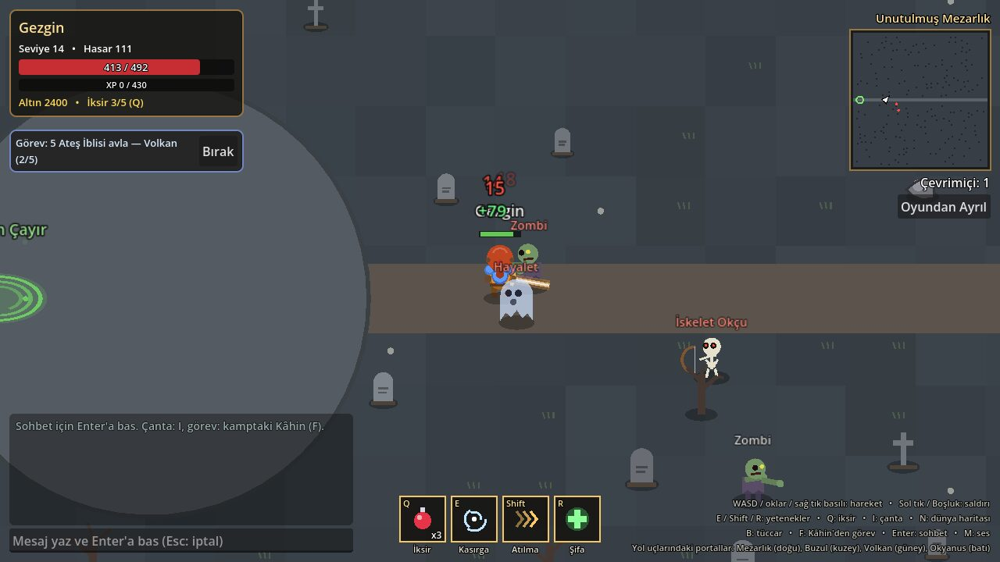
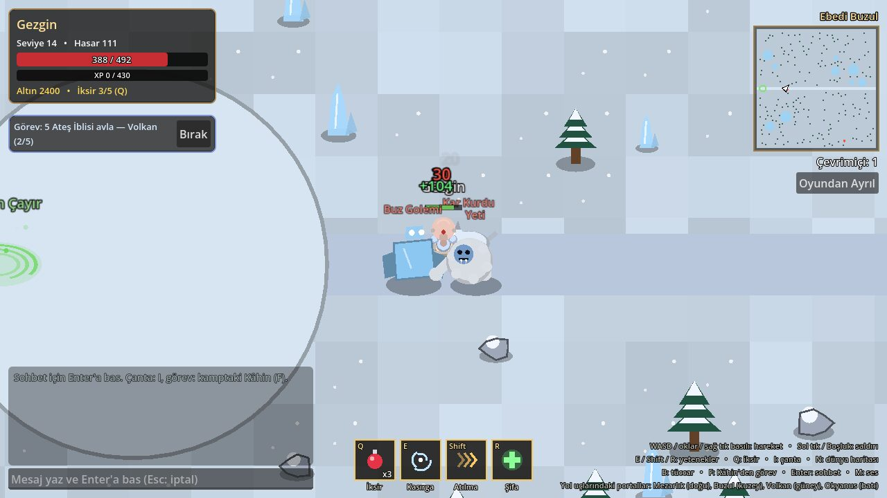
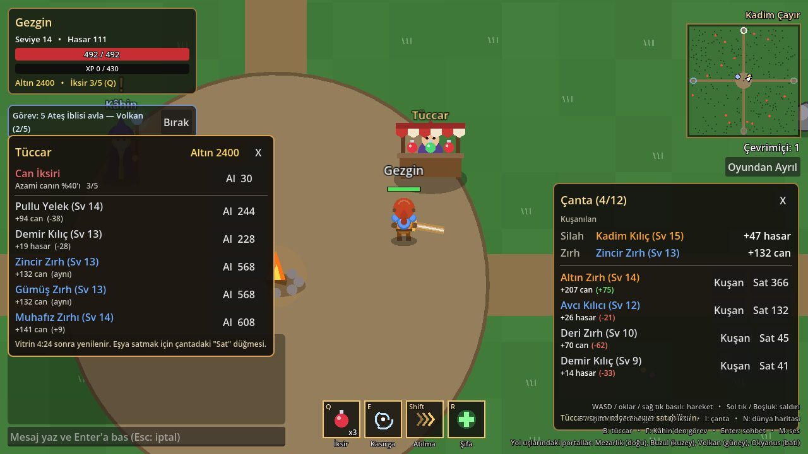
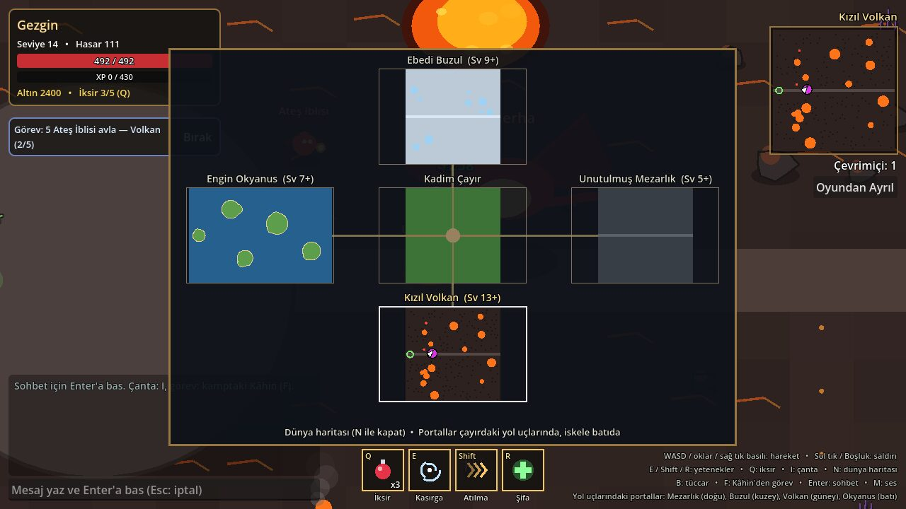
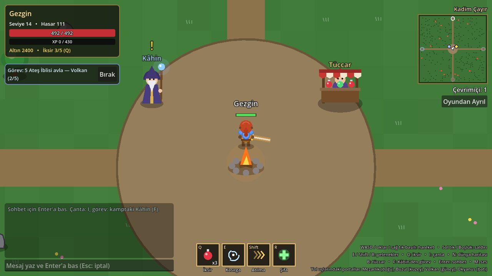
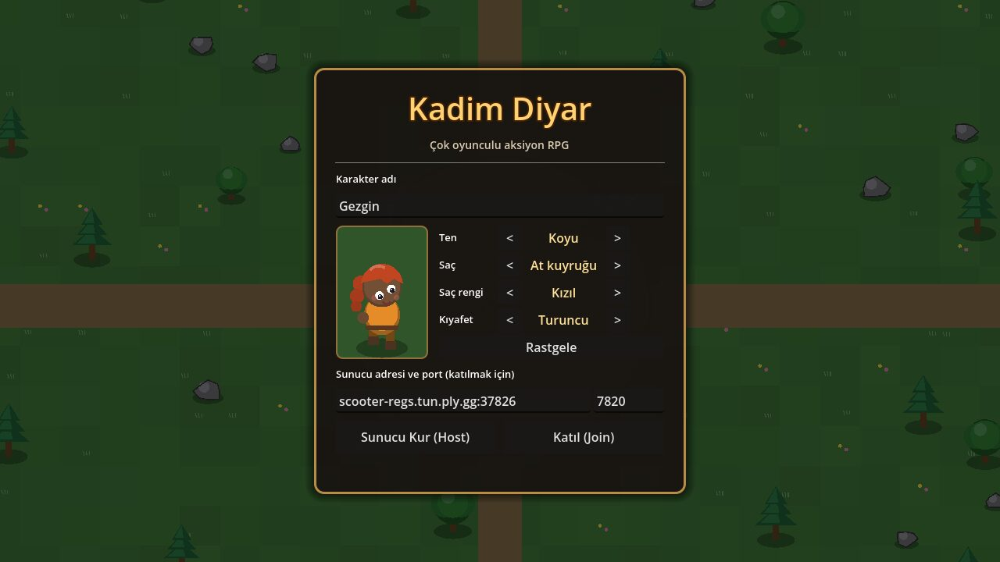

Karakter oluştur
Ten, saç stili, saç rengi ve kıyafet. Kuşandığın zırh ve kılıç karakterinde görünür.
Ücretsiz • Çok oyunculu • Windows, Linux, Tarayıcı
Karakterini oluştur, arkadaşlarınla aynı dünyaya gir. Çayırdan mezarlığa, buzuldan volkana ve okyanustaki adalara uzanan bölgelerde avlan; Ejderha, Kraken ve Kadim Dev'i birlikte devir.
Ten, saç stili, saç rengi ve kıyafet. Kuşandığın zırh ve kılıç karakterinde görünür.
Herkes aynı dünyada. Canavarı birlikte deviren herkes XP, altın ve ganimet şansı kazanır.
Sıradan, nadir ve efsanevi kılıç ve zırhlar. Çantanda karşılaştır, kuşan ya da sat.
Kâhin seviyene göre av görevleri verir: altın, XP ve eşya ödülü.
Kasırga ile çevrendeki her şeye vur, Atılma ile kaç, Şifa ile ekibini iyileştir.
Tüccar iksirin yanında seviyene göre silah ve zırh satar; vitrin 10 dakikada bir yenilenir.
Sağ üstte bulunduğun bölge; N ile tüm dünyayı gösteren harita.
Seviyen, çantan ve görevin sunucuda saklanır; döndüğünde kaldığın yerden devam edersin.








Tarayıcıda tuşlar çalışmazsa oyun alanına bir kez tıkla. Portallar çayırdaki yol uçlarında, okyanus iskelesi batıda.